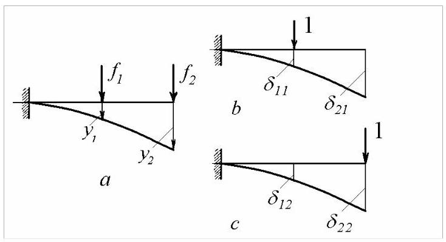
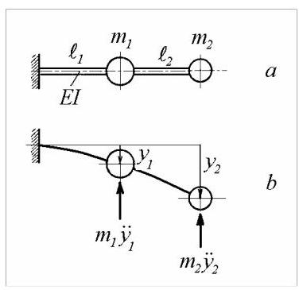
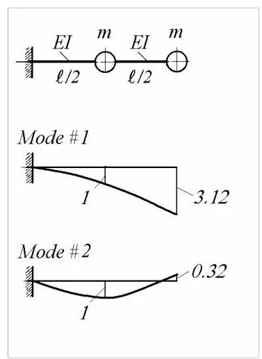
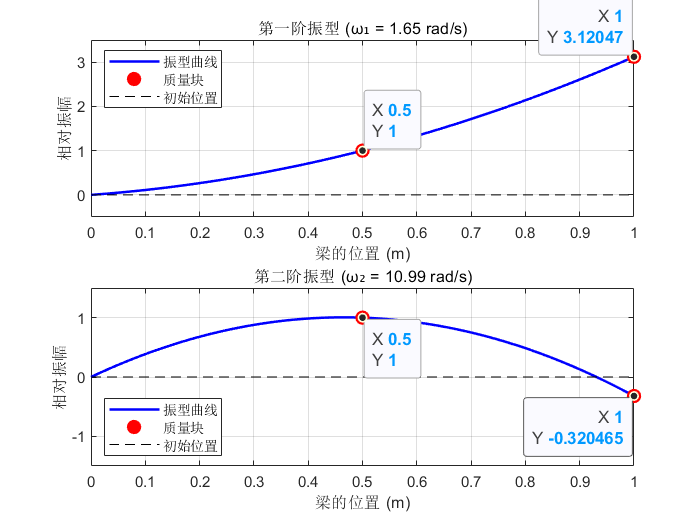

第19篇
4.3 柔性系统
本文考虑无质量梁和平面框架，其上附有刚体质量。对于此类系统，计算柔度(flexibilities)比计算刚度(stiffnesses)更容易，前者是可测量量。
4.3.1 柔度系数
设一弹性梁在点1和点2分别受到力\({f}_{1}\)和\({f}_{2}\)作用(图4.14, a)。沿\({f}_{1}\)和\({f}_{2}\)方向的挠度分别为\({y}_{1}\)和\({y}_{2}\)。
考虑未受载的梁(图4.14, b)，在点1沿\({f}_{1}\)方向施加单位力。令点1和点2沿\({y}_{1}\)和\({y}_{2}\)方向的挠度分别为\({\delta }_{11}\)和\({\delta }_{21}\)。类似地，在点2沿\({f}_{2}\)方向施加单位力，记挠度为\({\delta }_{12}\)和\({\delta }_{22}\)(图4.14, c)。
力\({f}_{1}\)和\({f}_{2}\)与总挠度\({y}_{1}\)和\({y}_{2}\)之间的关系可由以下方程表示
系数\({\delta }_{ij}\)称为柔度(影响)系数。
根据定义，\({\delta }_{ij}\)是由于在坐标\(j\)施加单位载荷而在坐标\(i\)产生的挠度。

图4.14
用矩阵表示，方程(4.77)变为
或
其中\(\left\lbrack \delta \right\rbrack\)称为柔度矩阵。
根据麦克斯韦互易定理，柔度矩阵是对称的\({\left\lbrack \delta \right\rbrack }^{\mathrm{T}} = \left\lbrack \delta \right\rbrack\):结构某点因另一点施加单位载荷产生的挠度，等于在第二点施加单位载荷时第一点的挠度(挠度与载荷方向相同)。
因为在形如\(\{ f\} = \left\lbrack k\right\rbrack \{ y\}\)的方程中，矩阵\(\left\lbrack k\right\rbrack\)被称为刚度矩阵(stiffness matrix)，于是得到\(\left\lbrack k\right\rbrack = {\left\lbrack \delta \right\rbrack }^{-1}\)，或等价地
当可能存在刚体运动时，\(\left\lbrack \delta \right\rbrack = {\left\lbrack k\right\rbrack }^{-1}\)不存在。没有“地面”反力来抵消为确定\(\left\lbrack \delta \right\rbrack\)而必须施加于结构的单位力，因而无法达到平衡。
4.3.2 运动方程
图4.15所示的无质量梁\(a\)具有恒定的弯曲刚度\({EI}\)，并在点1和点2处分别承载质量\({m}_{1}\)和\({m}_{2}\)。若仅关注这两个质量的横向位移，则系统的运动完全由挠度\({y}_{1}\)和\({y}_{2}\)描述，因此该系统具有两个自由度。

图4.15
在自由振动中(图4.15，b)，应用达朗贝尔原理(d'Alembert's principle)，作用在质量上的唯一外力为惯性力
将这些力代入方程(4.77)得到运动微分方程
写成矩阵形式
矩阵\(\left\lbrack b\right\rbrack\)可写为
其中\(\left\lbrack m\right\rbrack\)为对角质量矩阵。
在方程(4.81)中，耦合由柔度矩阵的非对角元素引起。
4.3.3 正则模态
假设解的形式为
方程(4.81)变为
或
这是标准特征值问题，其中\(\lambda = 1/{\omega }^{2}\)为特征值(eigenvalues)，\(\{ a\}\)为特征向量(eigenvectors)。特征值等于固有频率平方的倒数，特征向量则是定义固有振型形状的模态向量。
方程(4.85)可写成如下形式
非平凡解的条件给出频率方程
或
方程(4.86)有两个正实根\({\omega }_{1}^{2}\)和\({\omega }_{2}^{2}\)，即固有频率的平方。
振型由比值\(\mu = {a}_{2}/{a}_{1}\)定义，因此
例4.5
计算图4.15所示梁的固有振动模态，\(a\)其中\({\ell }_{1} = {\ell }_{2} = \ell /2,{m}_{1} = {m}_{2} = m\)和\({EI} =\)为常数。
解:柔度系数为
柔度矩阵为
方程(4.85)可写成
其中

图4.16
频率方程为
其解为\({\lambda }_{1} = {17.602}\)和\({\lambda }_{2} = {0.3976}\)。
固有频率为
振型由比值\(\mu = {a}_{2}/{a}_{1} = \lambda - 2/5\)定义
它们在图4.16中以图形方式呈现。
Matlab Demo
给出例题的的参考代码

% --- 数值参数设定 ---
E = 1; % 弯曲刚度 (N*m^2)
I = 1; % 截面惯性矩 (m^4)
m = 1; % 质量 (kg)
ell = 1; % 梁的总长度 (m)
% --- 柔度矩阵的简化形式 (根据例题) ---
% 柔度矩阵 delta = (ell^3 / (48*E*I)) * D_matrix
D_matrix = [2, 5; 5, 16];
% --- 求解特征值问题 [D]{a} = lambda{a} ---
% [V, Lambda] = eig(A) 返回特征向量矩阵V和特征值对角矩阵Lambda
[eigenvectors, eigenvalues_diag] = eig(D_matrix);
% 提取特征值 (eig函数默认按升序排列)
lambda_diag = diag(eigenvalues_diag);
lambda_2 = lambda_diag(1); % 较小的特征值
lambda_1 = lambda_diag(2); % 较大的特征值
% --- 计算固有频率 omega ---
% omega = sqrt(48*E*I / (m*ell^3*lambda))
omega_1 = sqrt(48*E*I / (m*ell^3*lambda_1));
omega_2 = sqrt(48*E*I / (m*ell^3*lambda_2));
% --- 提取并归一化振型 (模态向量) ---
% 使第一个元素为1，方便观察振幅比 mu
mode_shape_1 = eigenvectors(:, 2) / eigenvectors(1, 2);
mode_shape_2 = eigenvectors(:, 1) / eigenvectors(1, 1);
mu_1 = mode_shape_1(2); % a2/a1 for omega_1
mu_2 = mode_shape_2(2); % a2/a1 for omega_2
% --- 在命令窗口显示结果 ---
fprintf('--- 数值计算结果 ---\n');
fprintf('λ1 = %.4f, λ2 = %.4f\n', lambda_1, lambda_2);
fprintf('ω1 = %.4f rad/s\n', omega_1);
fprintf('ω2 = %.4f rad/s\n', omega_2);
fprintf('第一阶振型 (a2/a1)_1 = %.4f\n', mu_1);
fprintf('第二阶振型 (a2/a1)_2 = %.4f\n\n', mu_2);
% --- 绘制振型图 ---
figure('Name', '固有振动模态');
% 梁的位置坐标
x_beam = linspace(0, ell, 100); % 用于绘制平滑曲线
x_masses = [ell/2, ell]; % 质量块的位置
% 第一阶振型
subplot(2, 1, 1);
% 振型节点：(0,0), (l/2, a1), (l, a2)
y_mode_1_nodes = [0, mode_shape_1'];
x_mode_1_nodes = [0, x_masses];
% 使用样条插值绘制平滑的梁变形曲线
y_mode_1_curve = spline(x_mode_1_nodes, y_mode_1_nodes, x_beam);
plot(x_beam, y_mode_1_curve, 'b-', 'LineWidth', 1.5);
hold on;
plot(x_masses, mode_shape_1, 'ro', 'MarkerFaceColor', 'r', 'MarkerSize', 8); % 标记质量块
plot([0, ell], [0, 0], 'k--'); % 绘制未变形的梁
title(sprintf('第一阶振型 (ω₁ = %.2f rad/s)', omega_1));
xlabel('梁的位置 (m)');
ylabel('相对振幅');
legend('振型曲线', '质量块', '初始位置', 'Location', 'northwest');
grid on;
axis([0 ell -0.5 3.5]); % 调整坐标轴范围
% 第二阶振型
subplot(2, 1, 2);
% 振型节点：(0,0), (l/2, a1), (l, a2)
y_mode_2_nodes = [0, mode_shape_2'];
x_mode_2_nodes = [0, x_masses];
% 使用样条插值绘制平滑的梁变形曲线
y_mode_2_curve = spline(x_mode_2_nodes, y_mode_2_nodes, x_beam);
plot(x_beam, y_mode_2_curve, 'b-', 'LineWidth', 1.5);
hold on;
plot(x_masses, mode_shape_2, 'ro', 'MarkerFaceColor', 'r', 'MarkerSize', 8); % 标记质量块
plot([0, ell], [0, 0], 'k--'); % 绘制未变形的梁
title(sprintf('第二阶振型 (ω₂ = %.2f rad/s)', omega_2));
xlabel('梁的位置 (m)');
ylabel('相对振幅');
legend('振型曲线', '质量块', '初始位置', 'Location', 'southwest');
grid on;
axis([0 ell -1.5 1.5]); % 调整坐标轴范围